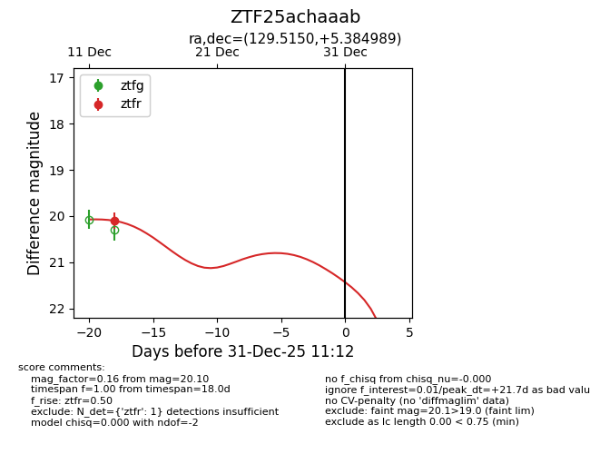
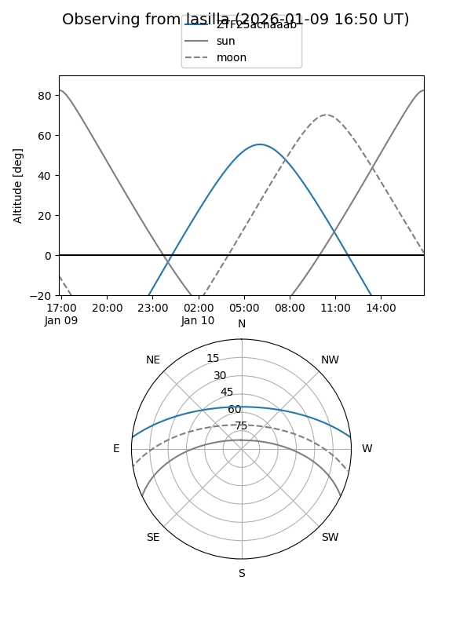
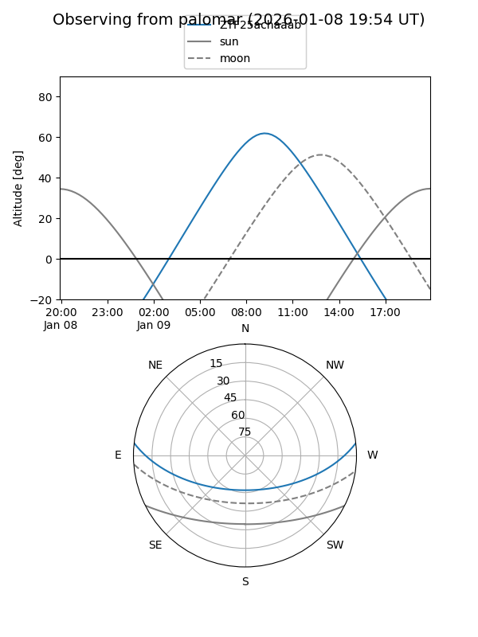

ZTF25achaaab
Target ZTF25achaaab at 2025-12-31 16:59
Aliases and brokers:
FINK:
Lasair:
ALeRCE:
alt names
ZTF25achaaab (ztf,fink_ztf)
Coordinates:
equatorial (ra, dec) = 129.5150,+5.38499
equatorial (HMS+DMS) = 08:38:03.59,+05:23:05.96
galactic (l, b) = (220.6216,+26.12313)
Flags:
Photometry:
last ztfr=20.10
1 ztfr detections
Lightcurve

Visibility


Additional plots